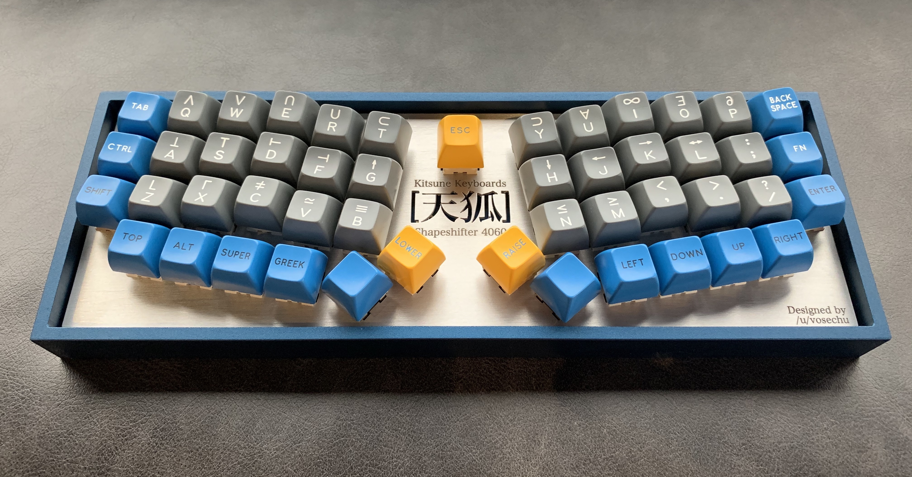

Text Inputs
Inputs will span their entire parent by default.
Input With Outer Label:
-

Shapeshifter
Kitsune Keyboards -

Shapeshifter (kb2)
Kitsune Keyboards -

Shapeshifter (kb8)
Kitsune Keyboards